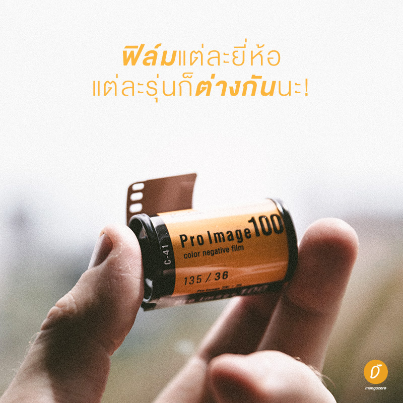

เริ่มต้นกับกล้องฟิล์ม
10 Oct 2019
Author : Sirawit Pokha
กลับมาเป็นที่นิยมอีกครั้งสำหรับกล้องฟิล์มสุดคลาสสิก ด้วยความเป็นเอกลักษณ์ของภาพที่ได้จากกล้องฟิล์มที่ไม่มีกล้องดิจิทัลตัวไหนทำได้เหมือน จึงทำให้หลาย ๆ คนตกหลุมรักกับการใช้กล้องฟิล์ม นี่ยังไม่รวมความเป็นเอกลักษณ์ของฟิล์มแต่ละยี่ห้อ แต่ละรุ่น ที่มีความแตกต่างกัน และให้โทรสีของภาพต่างกันไปอีกด้วย!
สำหรับคนที่เริ่มศึกษากล้องฟิล์ม คนที่เริ่มเล่นกล้องฟิล์มเนี่ย วันนี้เรามีข้อมูลเบื้องต้นของเจ้ากล้องฟิล์มมาให้ศึกษากันก่อนที่จะตัดสินใจซื้อกล้องฟิล์มจากร้านขายกล้องฟิล์มทั้งบนโลกออนไลน์และหน้าร้าน อย่างน้อย ๆ การมีความรู้พื้นฐานเกี่ยวกับการทำงานของกล้องฟิล์มและการใช้งานเนี่ย ก็จะทำให้เราเข้าใจมันมากยิ่งขึ้น และสามารถพอจะนึกภาพออกว่าเราอยากได้กล้องฟิล์มตัวแรกแบบไหนนั่นเอง
1.ความแตกต่างระหว่างกล้องฟิล์มและกล้องดิจิทัล
-
ความแตกต่างของกล้องฟิล์มและดิจิทัลก็คงเป็นต้นทุนที่ต่างกันของแต่ละภาพ กล้องดิจิทัลเราจะถ่ายแล้วลบก็ได้ แต่ถ้ากล้องฟิล์ม เราจะต้องเสียเงินล้างและสแกนก่อน ถึงจะเห็นภาพว่าเราถ่ายออกมาได้ดีหรือไม่ ฮ่า ๆ บางทีลืมไปเลยล่ะว่าภาพนี้ตั้งค่ายังไงนะถึงออกมาสวยแบบนี้ เลยใช้เวลาในการเรียนรู้ที่ยาวกว่าการใช้กล้องดิจิทัล อีกสิ่งที่แตกต่างกันอย่างเห็นได้ชัดคือความเป็นเอกลักษณ์ของภาพถ่ายนั่นเอง ภาพถ่ายจากกล้องฟิล์มจะมีเอกลักษณ์แตกต่างกันไปตามรุ่นของกล้องและประเภทของฟิล์มด้วยนะ เรียกได้ว่าเป็นเอกลักษณ์ที่กล้องดิจิทัลทำตามและเลียนแบบไม่ได้อย่างแน่นอน ที่สำคัญ กล้องฟิล์มหน้าตาดูเท่สุด ๆ ถือไปใช้ที่ไหนก็สะดุดตาไปหมด!
2.ค่าใช้จ่ายในการใช้กล้องฟิล์มมีมากกว่าที่คิด
ถ้ามองกันง่าย ๆ แบบไม่ต้องคิดอะไรมาก เหล่ากล้องดิจิทัลทั้งหลาย ค่าใช้จ่ายก็จะมีเรื่องของตัวกล้อง เลนส์ และตัวการ์ดความจำนั่นเอง ซึ่งก็จ่ายครั้งเดียว เมื่อหมดอายุการใช้งานก็ค่อยเปลี่ยนใหม่ และได้ภาพเลย โดยไม่ต้องนำไปล้างและสแกน ถ้าไม่ชอบก็กดลบทิ้งได้ทันที ส่วนกล้องฟิล์มนั้นนอกจากค่ากล้องและเลนส์แล้ว ยังมีค่าฟิล์มถ่ายภาพ บางรุ่นอาจจะต้องใส่แบตเตอรีเพื่อช่วยในเรื่องของการทำงานของกล้อง และยังมีค่าล้างสแกนฟิล์มอีกด้วย ซึ่งค่าล้างสแกนฟิล์มนี่แหละที่ค่อนข้างจะดูเป็นสิ่งที่หนักหนาสาหัสเอาการ ฟิล์ม 1 ม้วนก็จะถ่ายได้ประมาณ 20 – 35 ภาพ ค่าฟิล์มมีตั้งแต่หลักสิบไปจนถึงหลักร้อย ค่าล้างอีกต่ำ ๆ ม้วนละ 100 บาท ถ่ายรูปครั้งนึงเสียไปแล้วตั้งกี่บาทเนี่ย ดังนั้นถ้าใครอยากเล่นกล้องฟิล์มก็ควรศึกษาค่าใช้จ่ายที่จะตามมาด้วยนะ ไม่งั้นจะหมดสนุกเอาซะก่อน!
3.การทำงานของกล้องขั้นพื้นฐาน

จริง ๆ แล้วเนี่ยการทำงานของกล้องฟิล์มก็เหมือนกับกล้องดิจิทัลทั่ว ๆ ไปเลยนะ มีทั้งรูรับแสง, ISO และสปีดชัตเตอร์ที่มีความสัมพันธ์กันอยู่และเราสามารถปรับค่าให้ได้ภาพที่ต้องการได้ แต่ความแตกต่างคือตัวกล้องฟิล์มจะใช้ฟิล์มมารับแสงเพื่อให้ออกมาเป็นภาพ ถ้าเป็นกล้องดิจิทัลจะใช้ตัวเซนเซอร์รับภาพแทนนั่นเอง คนที่เพิ่งเริ่มเล่นกล้องฟิล์มอาจจะต้องศึกษาตรงนี้ไว้ก่อนจะได้ลองใช้กล้องจริง ๆ เพื่อความเข้าใจเบื้องต้นด้วย แต่สิ่งสำคัญอยู๋ที่การทำงานของรูรับแสง, ISO และสปีดชัตเตอร์ที่คนอยากเล่นกล้องฟิล์มต้องรู้ก่อนเริ่มใช้งาน
รูรับแสง : เป็นเหมือนกับม่านตาของกล้อง ยิ่งเปิดนาน แสงยิ่งเข้าไปในฟิล์มเยอะ ทำให้ภาพสว่างมากขึ้น ในกล้องจะเป็นสัญลักษณ์ตัว f นั่นเอง และตัวเลขจะแปรผกผันกับความกว้างของรูรับแสง
f1.4 = รูรับแสงกว้างมาก รับแสงได้เยอะ ภาพสว่างมาก
f8 = รูรับแสงเล็ก รับแสงได้น้อย ภาพมืดกว่าเดิม
f11 = รูรับแสงเล็กมาก รับแสงได้น้อย ภาพก็จะมีความสว่างน้อยลงไปอีก!
ISO : ค่าไอเอสโอ หรือไอโซตัวนี้ เป็นค่าที่มากับฟิล์ม จะเขียนไว้ข้างกล้องฟิล์มทุกรุ่นเลยว่ามีค่า ISO เท่าไหร่ ซึ่ง ISO ย่อมาจาก International Organisation for Standardisation ซึ่งเรียกง่าย ๆ ว่าเป็นค่าความไวแสงของฟิล์มนั่นเอง ถ้าค่าไวแสงสูงขึ้น ก็จะถ่ายภาพในที่แสงน้อยได้ดีขึ้นนั่นเอง
ISO 100 = ความไวแสงต่ำ ดังนั้นก็จะใช้ถ่ายภาพในพื้นที่ที่แดดจัด ๆ กลางแจ้งได้ดี
ISO 200 = ความไวแสงปานกลาง ก็จะใช้ได้กับที่กลางแจ้ง ในที่ร่ม รำไร ๆ ก็ดี
ISO 400 = ความไวแสงสูง ก็จะใช้กับในที่มืด ๆ ครึ้ม ๆ อยู่ในร่มได้ดี
สปีดชัตเตอร์ : คือค่าความไวของการเปิดชัตเตอร์นั่นเอง ยิ่งชัตเตอร์เปิดนานเท่าไหร่ ก็ยิ่งรับแสงและการเคลื่อนไหวของวัตถุได้มากขึ้นเท่านั้น ยิ่งเลขสปีดชัตเตอร์มากขึ้นเท่าไหร่ เวลาที่ชัตเตอร์เปิดก็ยิ่งน้อยลงเท่านั้น
สปีดชัตเตอร์ 30 = ชัตเตอร์เปิดนานเป้นเวลา 1/30 วินาที
สปีดชัตเตอร์ 150 = ชัตเตอร์เปิดนานเป็นเวลา 1/150 วินาที
สปีดชัตเตอร์ 250 = ชัตเตอร์เปิดนานเป็นเวลา 1/250 วินาที

4.ฟิล์มแต่ละยี่ห้อ แต่ละรุ่นก็ต่างกันนะ!
คนเริ่มเล่นกล้องฟิล์มใหม่ ๆ อาจจะไม่รู้ตรงนี้มาก่อนว่าฟิล์มแต่ละกล่องแต่ละรุ่นเนี่ย จะมีค่า ISO ที่ต่างกัน สามารถดูได้ที่ข้างกล่องหรือที่ข้างกลักฟิล์มได้เลย จะได้รู้ว่าเราควรตั้งค่ากล้องยังไงให้เหมาะกับการถ่ายภาพด้วยฟิล์มที่มี ISO เท่านี้ ต่อมาก็คือสีของฟิล์มแต่ละรุ่นและยี่ห้อก็มีเอกลักษณ์ต่างกันนะ ฟิล์มบางรุ่นก็จะเน้นสีเขียวในภาพ บางรุ่นก็จะเน้นสีโทนร้อน ซึ่งเขาว่ากันว่ามันจะดูได้จากสีของแบรนด์หรือกล่องฟิล์มนั่นแหละ
อย่างถ้าเราจะไปญี่ปุ่น อยากได้ภาพโทนเขียว ๆ ฟ้า ๆ แบบที่คนชอบแต่งภาพกัน ก็เอาฟิล์มจากยี่ห้อ Fuji ไปถ่ายได้เลยจ้า เพราะกล่องสีเขียว ก็จะได้ภาพโทนสีนั้น ๆ หรือถ้าเราจะไปที่ที่มีบ้านเรือนเป็นอิฐเยอะ ๆ อย่างทางยุโรปอะไรแบบนี้ก็ลองพก Kodak ที่เป็นกล่องสีเหลืองไปแทน ก็จะช่วยเน้นให้ตัวสีโทนร้อนมันเด่นและชัดขึ้นนั่นเอง ทางที่ดีแนะนำว่าให้ลองหาภาพที่ถูกถ่ายด้วยฟิล์มแต่ละยี่ห้อดูก่อน ชอบสีโทนไหนก็ไปซื้อมาใช้ตามได้เลย!
5.หาซื้อกล้องฟิล์มได้ที่ไหนบ้าง?
ปัจจุบันนี้ต้องบอกเลยว่าการหาซื้อกล้องฟิล์มก็คือง่ายมาก มีร้านใน Instagram เยอะมาก ใน Facebook เองก็เยอะเหมือนกัน หรือจะไปเลือกซื้อเองที่หน้าร้านก็มีหลายร้านให้เลือกเลย แค่เสิร์ชคำว่า “กล้องฟิล์ม” ก็จะเจอแล้วล่ะ แต่ทางที่ดีเรามองว่าถ้าไปที่หน้าร้านได้ก็จะดีที่สุด เพราะก่อนเราจะซื้อจะได้ชวนคนขายพูดคุย ลองสอบถามข้อดีข้อเสียของกล้องแต่ละรุ่นในงบที่เรามีไว้ และยังได้ลองจับกล้องฟิล์มตัวที่เราจะซื้อก่อนด้วยนะ ว่าถนัดมือไหมนะ ใหญ่ไปไหม เล็กไปไหม หนักไปหรือเปล่า
เชื่อเลยว่าเจ้าของร้านกล้องฟิล์มทุกคนคงอยากแนะนำให้เลือกสิ่งที่ดีที่สุดให้กับลูกค้าจริง ๆ อย่างเราเองไปได้กล้องฟิล์มตัวแรกมาจากเมือง Budapest ประเทศฮังการี ก็เดินเข้าไปแบบงง ๆ ถามเจ้าของร้านเอาว่าเรามีงบเ่านี้ อยากได้กล้องที่ใช้ง่ายหน่อย พอจะมีตัวไหนแนะนำบ้าง พอซื้อแล้วก็ให้เขาสอนใส่และถอดฟิล์มไปด้วยเลย แบบนี้คนที่เริ่มเล่นกล้องฟิล์มก็สบายเลยแหละ
6.ล้างฟิล์มที่ไหนดี?

บอกตรง ๆ ว่าเดี๋ยวนี้ร้านล้างฟิล์มก็ไม่ได้หายากเลยนะ มีหลาย ๆ ร้านที่ให้บริการล้าง-สแกนฟิล์มด้วยราคาเริ่มต้นแค่ 100 บาท ซึ่งก็แล้วแต่ว่าเราจะเลือกใช้บริการร้านไหน ให้เสิร์ชหาคำว่า “ร้านล้างฟิล์ม” เดี๋ยวนี้เหมือนจะมีให้บริการแบบ เราแค่ส่งตัวกลักฟิล์มไป โอนให้เงินให้ทางร้าน ทางร้านรับของ ล้าง และสแกนภาพให้เราได้เลย บางทีก็แค่วันเดียวก็จะได้ภาพส่งมาให้ในอีเมลล์แล้ว! เร็วและสะดวกมาก ๆ
แต่ต้องอธิบายตรงนี้ก่อน มือใหม่หลาย ๆ คนอาจจะคิดว่าการล้างสแกนฟิล์มคือการเอาฟิล์มไปล้าง ล้างแบบล้างอัดออกมาเป็นภาพใบ ๆ แล้วเอามาสแกนส่งให้เรา แบบนี้คือเข้าใจผิดนะ การล้างสแกนคือ การเอาฟิล์มไปล้างสารเคลือบออก แล้วก็นำไปเข้าเครื่องสแกนฟิล์ม ทำให้ได้ไฟล์ภาพออกมา ก่อนที่ทางร้านจะอัปโหลดส่งมาให้เรานั่นเอง ถ้าเราจะเอาภาพเป็นใบ ๆ ต้องเอาไปอัดอีกทีนะ